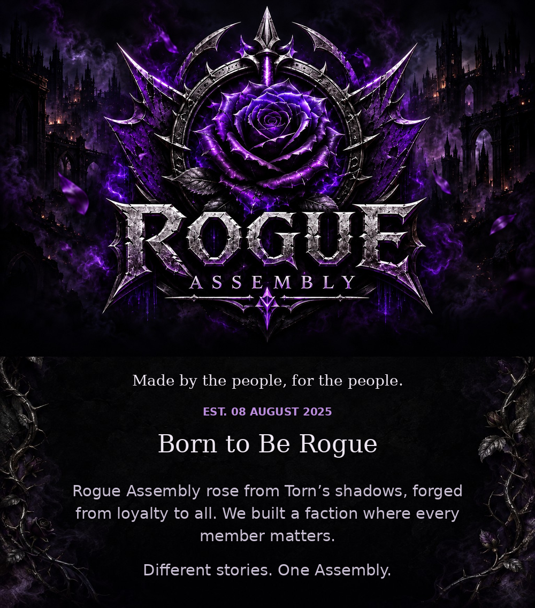
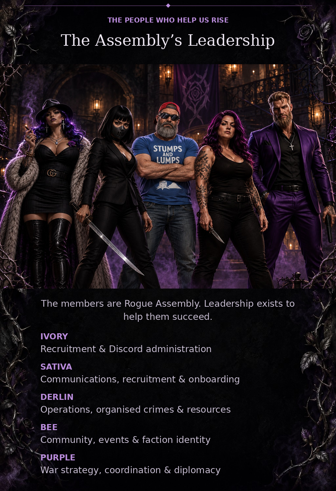
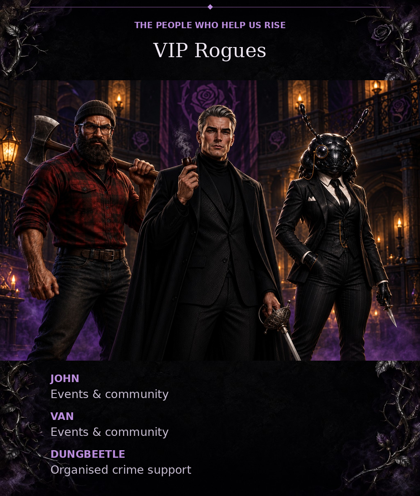
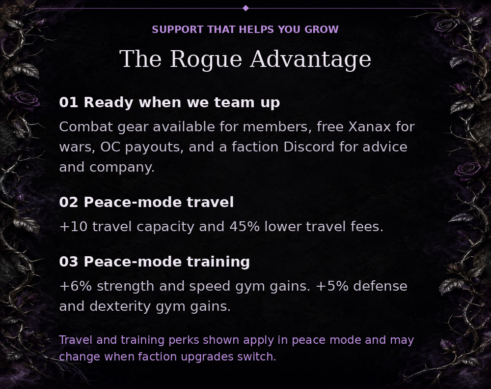
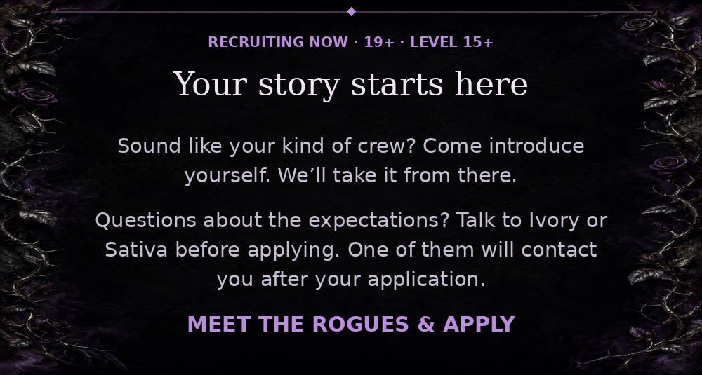

<!doctype html><html lang="en"><meta charset="utf-8"><meta name="viewport" content="width=device-width,initial-scale=1"><title>Rogue Assembly — redesign draft</title><style>body{margin:0;background:#08070d;color:#eee7f2;font:18px sans-serif}main{max-width:1000px;margin:auto}img{display:block;width:100%;height:auto}a{color:#bb8ddd}nav{text-align:center;padding:30px}</style><main><a href="https://www.torn.com/factions.php?step=profile&amp;ID=54651"></a><nav><a href="https://www.torn.com/factions.php?step=profile&amp;ID=54651">apply</a> · <a href="https://www.torn.com/profiles.php?XID=3734945">Ivory</a> · <a href="https://www.torn.com/profiles.php?XID=3832806">Sativa</a></nav></main></html>